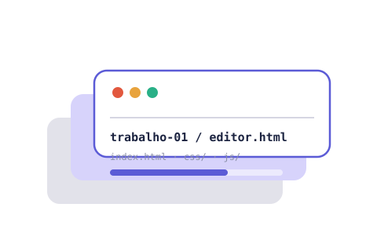
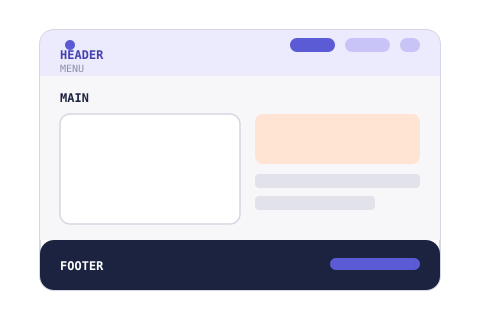

HTML semântico
Cabeçalho, menu, conteúdo principal e rodapé marcados com as tags que descrevem seu papel na página.
◆ Interação Web IFRS · 2026/2
Este é o site que vai reunir os trabalhos práticos de Interação Web ao longo do semestre. Cada entrega ganha a sua própria página, mantendo o mesmo cabeçalho, menu e rodapé. Só a parte principal muda.
Sobre este site
Em vez de entregar cada trabalho isolado, a proposta é reunir tudo em um único site, construído com HTML, CSS e JavaScript puros, sem frameworks nem bibliotecas de terceiros.
Isso significa escrever cada arquivo à mão: a marcação semântica, a folha de estilos e a lógica de interação, cuidando da organização dos arquivos desde o início para que o site continue fácil de manter conforme novos trabalhos chegam.

Como o site está organizado
Toda página do site compartilha o mesmo cabeçalho com o menu de navegação e o mesmo rodapé, para que a identidade visual: cores, tipografia, espaçamento, seja sempre reconhecível.
Só a área principal (<main>) muda de página para página: aqui
é a apresentação do site; na página do Trabalho 1 é o editor de menus.

Ao longo do semestre
Cada trabalho é liberado em uma data diferente e adicionado a este site assim que fica pronto. A ordem abaixo é a ordem real de entrega ao longo do semestre.
Formulário que gera, ao vivo, um menu de navegação personalizável: cores, bordas, imagem e espaçamento.
Disponível agoraDescrição e link serão adicionados quando o trabalho for publicado.
Em breveDescrição e link serão adicionados quando o trabalho for publicado.
Em breveComo foi construído
Cabeçalho, menu, conteúdo principal e rodapé marcados com as tags que descrevem seu papel na página.
Variáveis, reset e estilos separados em arquivos próprios, reaproveitados por todas as páginas do site.
Sem bibliotecas: o editor de menus é construído com manipulação direta do DOM e eventos nativos.